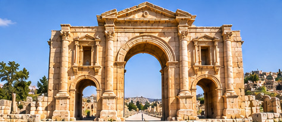
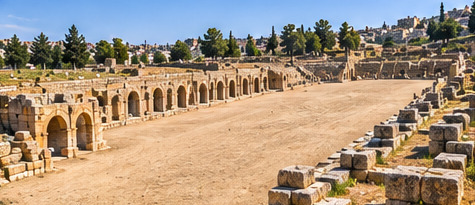
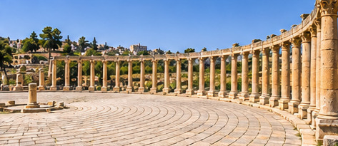
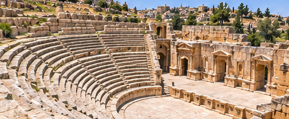
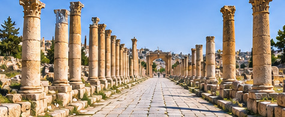
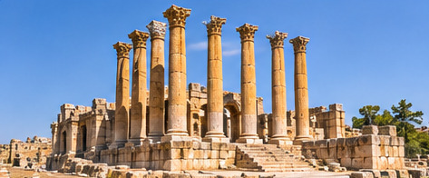
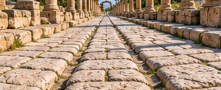
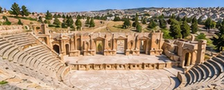
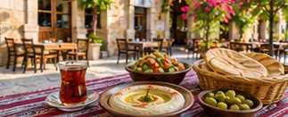

Jerash
A walk through ancient Gerasa
Places to explore in Jerash
Walk the city in this order, from Hadrian’s Arch in the south to the Temple of Artemis. At an easy pace the route takes three to four hours.
-

Stop 1: Hadrian’s Arch
The triple gateway at the southern edge of the site, built in AD 129–130 to mark Emperor Hadrian’s visit to the city.
-

Stop 2: The Hippodrome
A long Roman racetrack just past the arch, where crowds watched chariot races. Archaeologists date it to between the 2nd and 3rd centuries AD.
-

Stop 3: The Oval Plaza
A paved square ringed by Ionic columns, laid out in the 1st century AD. Its paving stones curve in rows that follow the colonnade.
-

Stop 4: The South Theatre
A Roman theatre built in the late 1st century AD, in the reign of Emperor Domitian. From the top rows you look out over the whole city.
-

Stop 5: The Colonnaded Street
The city’s main street, laid out around AD 100 and given its Corinthian columns in a later 2nd-century rebuild. Look for the ruts cart wheels wore into the paving.
-

Stop 6: The Temple of Artemis
The temple of the city’s patron goddess, begun around AD 150. Its tall Corinthian columns still stand on the rise west of the main street.
Experiences to try in Jerash
-

Follow the Roman Road
Look for wheel ruts along the Cardo.
-

Take in the Theatre View
See the South Theatre from the upper rows.
-

Have Lunch in Modern Jerash
Head into town for a Jordanian lunch.
Plan your visit
- Suggested visit
- Half a day: allow three to four hours on the site, walking the stops in the order above.
- Getting there
- About 48 km north of Amman, roughly an hour by car. Minibuses from Amman’s North Bus Station (Tabarbour) stop near the site.
- What to bring
- Water, a hat and comfortable shoes. The site is large and has little shade.
Entry is included in the Jordan Pass. Opening hours and ticket prices change during the year, so check them before you go.
Questions about visiting Jerash
How long do you need at Jerash?
Half a day: three to four hours on the site, walking the main stops from Hadrian’s Arch to the Temple of Artemis. Add lunch in modern Jerash and you are back in Amman the same afternoon.
How do you get from Amman to Jerash?
Jerash is about 48 km north of Amman, roughly an hour by car. Minibuses from Amman’s North Bus Station (Tabarbour) also stop near the site.
Is Jerash suitable for children?
Yes. The open site, the Roman racetrack at the Hippodrome and the view from the top rows of the South Theatre keep children interested. The site is large with little shade, so bring water and hats and plan a few breaks.
What is the best time of day to visit Jerash?
Morning, before the midday heat, because there is little shade on the site. Late afternoon is cooler too, with warm light on the columns.